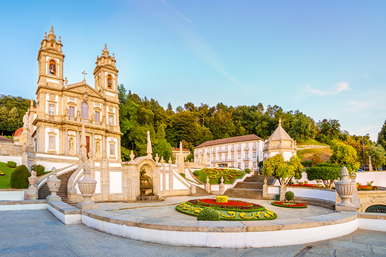
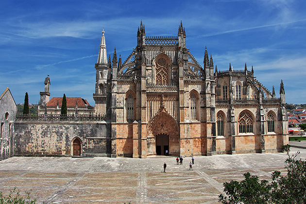
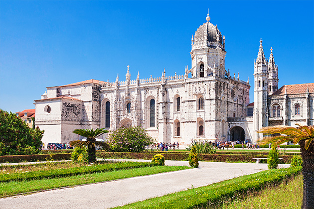
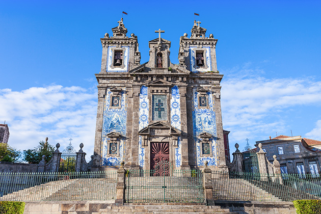
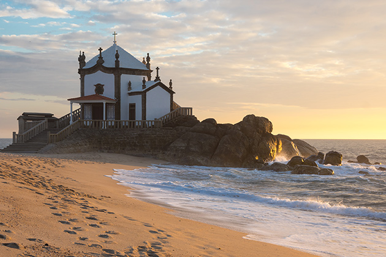

Sanctuary of Bom Jesus do Monte (Braga)
This National Monument and UNESCO World Heritage Site in Braga stands apart from other churches in Portugal due to its extraordinary surroundings and building. The Bom Jesus do Monte is a Catholic Shrine and architectural-landscape setting that includes a church, a large stairway that serves as a Way of the Cross, and even a forest. The site inspired the construction of the Nossa Senhora dos Remédios Shrine in Lamego. Among the highlights is the Latin cross shaped Basilica, one of the first neoclassical buildings in Portugal, as well as the impressive stairway, divided into three flights: the portico stairway, the stairway of the five senses and the stairway of the three virtues of faith, hope and charity.
Batalha Monastery (Leiria)
Also known as the Santa Maria da Vitória Monastery, it was built in 1386 by D. João I, Master of Avis, in gratitude to Our Lady for the victory over the Castilians in the Battle of Aljubarrota. It belonged to the Order of Saint Dominic and was only finished in 1563, representing a magnificent example of Gothic architecture in Portugal, having been classified as Unesco World Heritage and chosen as one of the Seven Wonders of Portugal in 2007.
Jerónimos Monastery (Lisboa)
Also known by the name Santa Maria de Belém Monastery, this national symbol was built in the XVI and has been a UNESCO world heritage site since 1983. In 2007 it was selected as one of the seven wonders of Portugal. It represents the height of Manueline architecture and is undoubtedly the most notable monastic building of its age in Portugal, considered one of the main salon-churches in Europe. Highlights include the south and west facing entrances that should be seen as a diptych, sculpted in honour, and to the glory of, King D. Manuel I.
Santo Ildefonso Church (Porto)
The Church of Saint Ildefonsus, or Santo Ildefonso, in Porto, is an example of the artistic mastery that dominates the majority of Portugal’s churches. Rebuilt in the first half of the XVIII Century, the façade is composed of two bell-towers with cornices and its walls are coated in tiles painted by Jorge Colaço, illustrating scenes from the life of Saint Ildefonsus.
Chapel of the Lord of the Stone(Porto)
It was erected on a rock by the sea in 1763. June 17, 1763, the date of the foundation of the Chapel of Senhor da Pedra. It is believed that the origin of the worship at the Chapel of Senhor da Pedra may stem from an ancient pagan cult, of a naturalistic character, from pre-Christian peoples, whose deities were worshipped in the open nature, and was later converted to Christianity. The pilgrimage to Senhor da Pedra is one of the most traditional in both Vila Nova de Gaia and the parish of Gulpilhares. It takes place annually on the beaches of Senhor da Pedra, on Trinity Sunday, and extends until the following Tuesday.